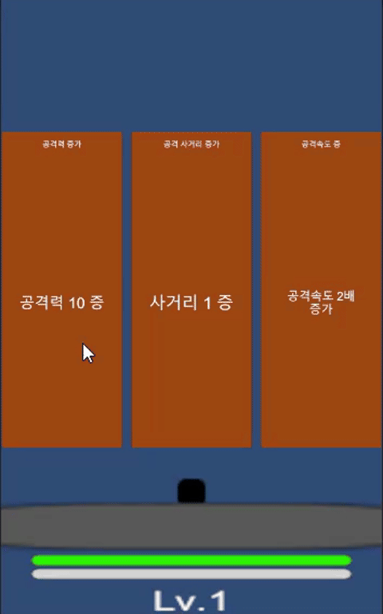

Introduction
Noname Defense Prototype는 웨이브 방어 게임을 목표로 한 프로토타입입니다. 화면 하단의 플레이어가 포탑처럼 포탄을 발사하고, 상단 격자에는 몬스터가 배치되어 성벽을 향해 전진합니다.

주요 특징
- 플레이어는 좌우로 움직이며 마우스/터치 포인터로 격자 셀을 지정해 공을 발사합니다. 셀이 비면 자동으로 사거리 내 가장 가까운 적을 다시 조준합니다.
- 몬스터는 격자 최상단에서 스폰되어
enemyRowAdvanceInterval마다 한 행씩 내려오고, 성벽에 도달하면 피해를 준 뒤 사라집니다. attackRange가 0보다 크면 성벽으로부터 몇 행 떨어진 위치까지 원거리 공격을 수행합니다. 0이면 충돌 공격만 유효합니다.- 드롭을 수거하면 경험치·골드·체력·증강을 획득합니다. 게임 오버가 발생하면 남은 드롭은 연출 없이 제거되고 골드 보상만 즉시 지급됩니다(증강 드롭은 소멸).
- 레벨업 시 3개의 증강 후보가 제시되며, 선택 결과가 즉시
PlayerEntity에 적용됩니다.
키 피처 & 이니셔티브
- Clean Architecture: Core / Application / Infrastructure / Presentation 4계층으로 분리해 의존성을 최소화했습니다.
- Definition Importer: Excel → JSON → ScriptableObject 파이프라인을 제공해 데이터 자산 관리 비용을 낮췄습니다.
문서 길잡이
- 빠른 시작: Getting Started
- 계층별 설명: Layers
- 도구 개요: Tools
- API Reference:
api/,api-editor/폴더를 통해 DocFX가 생성한 문서를 확인할 수 있습니다.